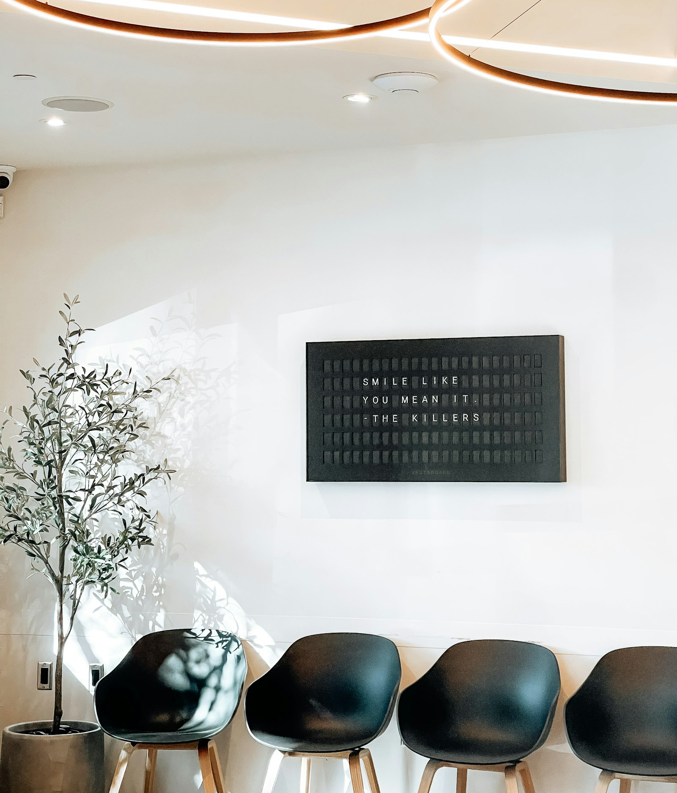

Palmview sits in the heart of Santa Monica, a few minutes from the beach. Our office was designed to feel calm and welcoming the moment you walk in.
Natural light, soft music and comfortable chairs set the tone, and our team works hard to keep every visit relaxed and on time. Each treatment room is fitted with modern equipment, and our experienced staff is always happy to answer questions and walk you through your care.
Dr. Elena Marsh brings an artist’s eye and a gentle touch to every treatment. Great dental care starts with a skilled dentist and a caring team, and it is completed by a modern office with up-to-date technology. We have put all three together, along with a few extra comforts to make each visit easier:
We want every patient to leave healthier and more confident than they arrived. That means listening first, explaining clearly and recommending only what you truly need. We use proven materials and modern equipment, combined with careful, artistic attention to detail, so your results look natural and last. Your comfort and trust matter to us as much as the dentistry itself.
“I studied art before I studied dentistry, and I still see every smile as a small piece of design. Getting the details right, for each person, is what I love most about this work.”
– Elena Marsh D.D.S.